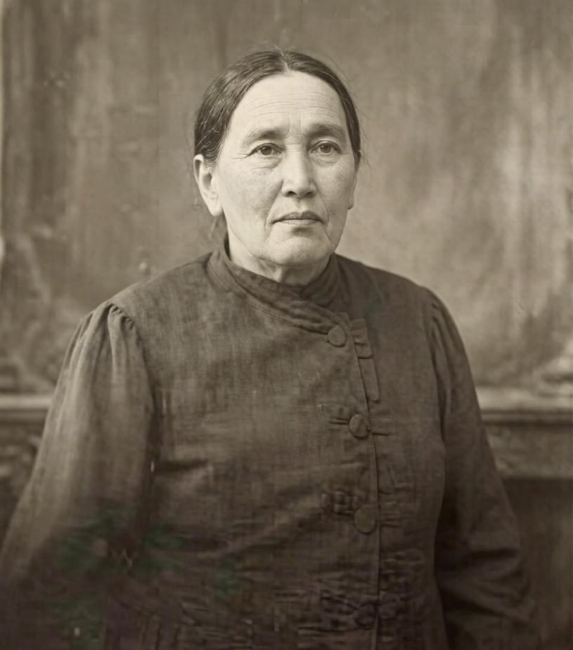
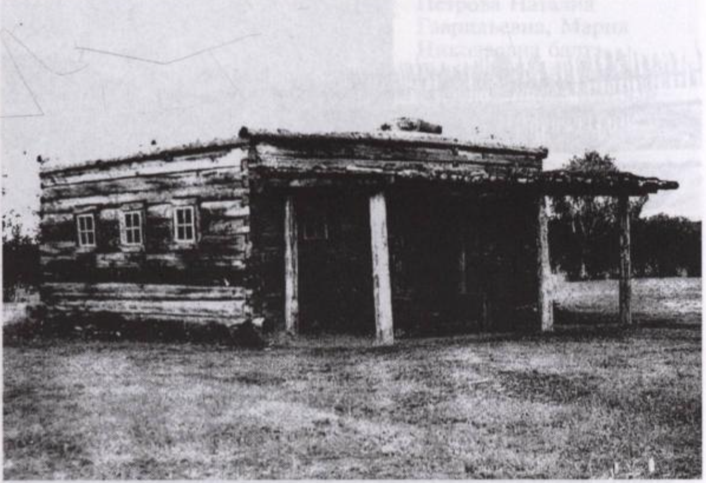
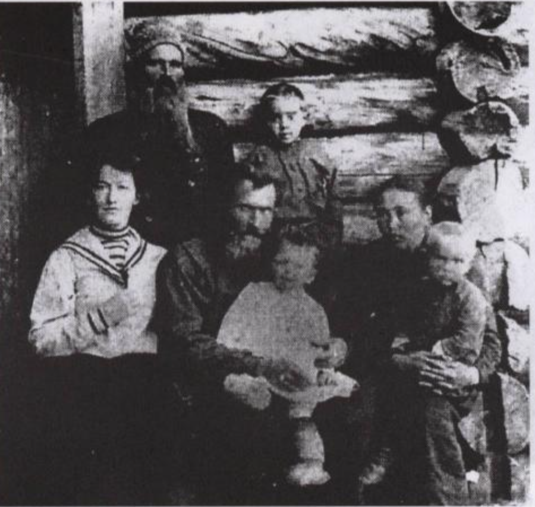
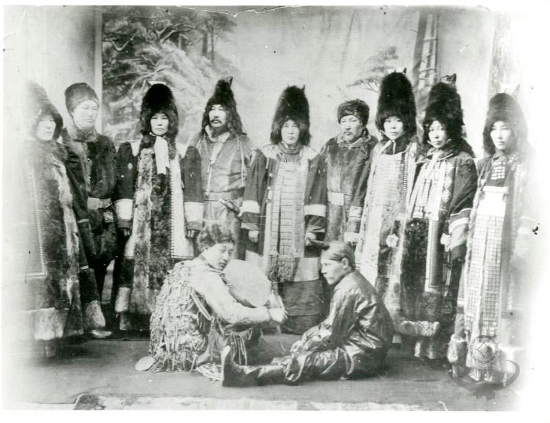
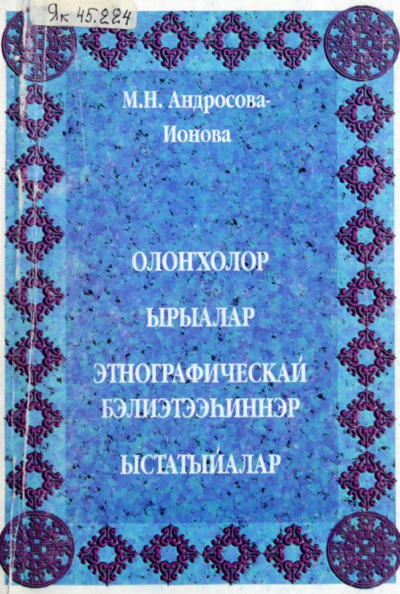
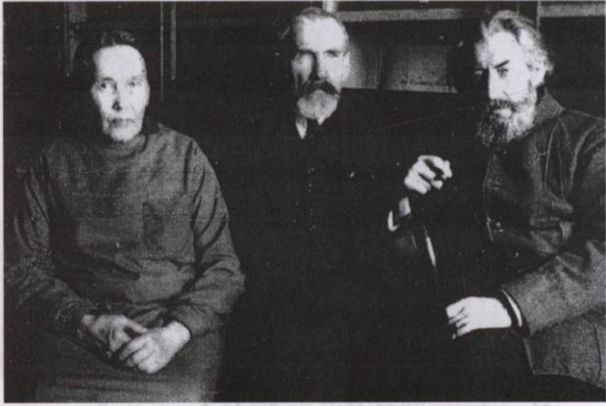
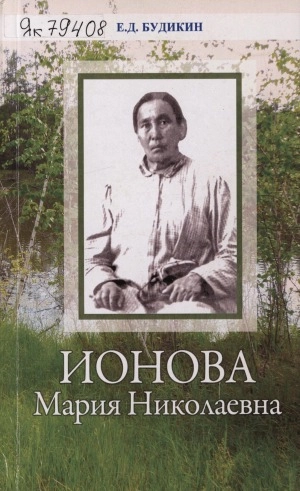
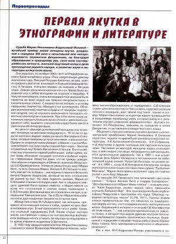
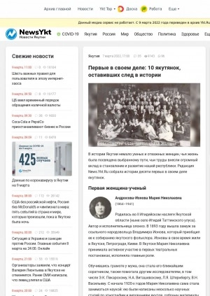

Best AI Website MakerОлоҕо, айар уонна научнай үлэтэ

Мария Николаевна 1864 сыллаахха Таатта улууһун II Игидэй нэһилиэгэр төрөөбүтэ. Кини хараҥа баттал кэмигэр, сут-кураан дьылларга үөскээбитэ. Төрөппүттэрэ эрдэ өлөннөр, тулаайах кыыс эһэтигэр Петров Николай Петровичка (Күүгэс Ньукулайга) иитиллибит. Эһэтэ бастыҥ тойуксут, олонхоһут, бастакы Оруоһун Дарыбыаҥҥа сылгыһыттаабыт. Кэлин Охонооһой Бөтүрүөп диэн баайга таһаҕас таһааччынан үлэлээн, Халыманан, Охотскайынан, Дьокуускайынан сылдьыбыт.
Мария эһэтин батыһа сылдьан, кыра эрдэҕиттэн олоҥхону истэн улааппыт, тугу истибитин үүт-үкчү үтүктэр буолбут. Ыһыахтарга, урууларга туойар, олоҥхолуур идэлэммит.


Ионовтар табаарыстарынаан, Дьокуускай
1893 сыллаахха үс олоҥхону Э.К. Пекарскайга суруйан биэрбитэ: «Күлкүл бөҕө — Силлирикээн эмээхсин икки», «Үүт аас бэйэлээх Үрүҥ Айыы Тойон», «Орто дойдуну тупсарарга түспүт хара тыа иччитэ баай Барылаах». Бу айымньылартан «Күлкүл бөҕө — Силлирикээн эмээхсин» диэни Г.В. Ксенофонтов поэманан сыаналаабыта. Аан дойду литературатын институтун учуонайа И.Б. Пухов: «Маҥнайгы сахалыы уус-уран айымньыны хаалларбыта» — диэбитэ.
В.М. Ионовтыын бииргэ үлэлээн элбэҕи оҥорбуттара. Тааттаҕа 5 сиргэ дьиэтээҕи оскуолалары аһан 40-ча оҕону, дьону үөрэппиттэрэ. Сахалыы букубаары (сурук-бичик) кинигэни оҥорбуттара, 3 төгүл бэчээттэммитэ.

Мария Николаевна Всеволод Михайлович Ионовы кытта холбоһон, 29 сыл бииргэ олорбуттара. Бу кэм устата кини наука эйгэтигэр биллэр-көстөр чинчийээччигэ кубулуйбута.
1893 сыллаахха Эдуард Карлович Пекарскайга «Күлкүл бөҕө — Силлирикээн эмээхсин икки», «Үүт аас бэйэлээх Үрүҥ Айыы Тойон» уонна «Орто дойдуну тупсарарга түспүт хара тыа иччитэ баай Барылаах» диэн үс олоҥхону сурукка түһэрэн биэрбитэ. Мантан «Күлкүл бөҕөнү» этнограф Г.В. Ксенофонтов сахаҕа бастакы поэма быһыытынан сыаналаабыта.
Мария Николаевна Э.К. Пекарскайга саха тылын тылдьытын оҥоруутугар мэлдьи көмөлөспүтэ: 565 тылдьыт этиилэрин быһаарбыта, 211 ыстатыйа тылбааһын, 285 тылга холобурдары биэрбитэ, тылдьыт 38 тыһыынча тыллаах бэчээттэнэн бүтүөр диэри көмөлөспүтэ.
Ойууннааһын сиэрин-туомун, итэҕэли дириҥник билэрэ. В.Н. Васильев «Куруубай хааннаах Кулун Куллустуур» диэн олоҥхотун бэчээккэ бэлэмнэспитэ. Сахалар былыргы иһиттэрин-хомуостарын, номохторун хомуйан музейдарга туттарбыта.
1925 сыллаахха нуучча географическай обществотын кыһыл көмүс мэтээлинэн наҕараадаламмыта — этнографияҕа үлэлэрин иһин. Отчуоту «Известия Всесоюзного географического общества» сурунаалга (1946, Т. 78, Вып. 2, стр. 255) бэчээттээбиттэрэ. Э.К. Пекарскай бэйэтэ бу наҕараадаланыытын туһунан суруйбута: «Мария Николаевна Бүлүү этэрээтин састаабыгар барда. Аҕыйах хонуктааҕыта нуучча географическай обществотын сыллааҕы мунньаҕар этнографияҕа үлэлэрин иһин кыһыл көмүс мэтээл туттарылынна».

В книге помещены выявленные на сегодня труды М. Н. Ионовой, первой из женщин якуток, приобщившейся к литературно-творческой и научно-исследовательской работе: сочиненные ею олонхо, песни, записанные загадки, а также заметки и статьи на якутские этнографические темы

Хоргуйууну утары охсуһар соруктаах, практическай суолталаах кинигэлэри суруйбута. 1925 сыллаахха Москваҕа «Оҕуруот аһын үүннэриитэ» диэн сахалыы алпаабытынан 2000 ахсаанынан тахсыбыт кинигэтэ норуокка улахан өҥөлөөх. Манна сири оҥоруу, бурдук, оҕуруот аһын олордуу, хотону курулааһын, күлү-түптэни туһаныы туһунан 23 боппуруос сиһилии ырытыллар. Кини сүөһүгэ турнепс, эриэппэ, хортуоппуй тобоҕун сиэтиини киллэрбитэ. Кини бэйэтэ суруйбутунан, сут дьылларга оҕуруот баар буоллаҕына, киһи кыһанан үлэлээтэҕинэ туох да кыһалҕаны билбэккэ аһаан-сиэн иитиллэн тахсыахтаах. Сүөһүнү да сутатыа суох кэриҥнээх.
Мария Николаевна төрөөбүт-үөскээбит кэмэ хараҥа, үөрэх-сайдыы суох кэмэ этэ. Дьон өйдөбүлүгэр тулалара сарбаҥнас абааһы, аҕыйах ахсааннаах баайдар эрэ дэлэччи олохтоохторо, элбэх сүөһүлээхтэрэ, бастыҥ сири барытын баһылааннар, бары үлэлэригэр дьадаҥы дьону хамначчыт гынан олорбуттара.
Итэҕэл улахан күүстээҕэ, ыарахан дьайыылааҕа. Киһи, сүөһү ыалдьыыта, өлүүтэ барыта абааһыларынан оҥоһуллара, кинилэри ойууннар, удаҕаннар эрэ дьалбарытар, кыайар кыахтаахтарынан ааҕыллаллара. Ордук кутталлаах абааһынан оҕону, дьахтары сиир абааһылар эбиттэр.
Ол иһин норуот ортотугар сырдатыы, үөрэхтээһин үлэтин ыыппыта. Аҥардас Тааттаҕа 5 сиргэ дьиэтээҕи оскуолалары аспыта. Онно В.М. Ионов 40-ча оҕону уонна дьону сахалыы сурукка-бичиккэ үөрэппитэ.
Мария Николаевна дьон, ордук хат дьахтар уонна оҕо өлүүтүн тохтоторго туруммута. Кини медицина суох кэмигэр доруобуйа харыстабылын ньымаларын — оҕону уһуннук эмтэриини, ас-таҥас бэлэмин, гигиена быраабылаларын тарҕаппыта. 1937 сыллаахха «Таатта ырыатыгар» хоргуйууга туттуллар сиир оттору, отон астары сиһилии суруйан хаалларбыта.
Мария Николаевна айымньыларыгар, олоҥхолоругар, ахтыыларыгар элбэх этиилэрэ, сүбэлэрэ билигин да сөптөрүн көрөбүт. Ол курдук, кырдьаҕас, намтык, сииктээх, муостатыгар подстилката суох, хардаҥ оту эрэ сиир сүөһү ырар, тымныыга инчэҕэй сүөһү тоҥор, титирээн ырар, ыалдьар, өлөр, сүтэр. Сүөһү күөх окко иһэр-үөһэ ирэр, тэнийэр, сылыйар.
Сүөһү оҕуруот аһын эмиэ аһыахтаах: хортуоппуйу, турнепыһы, эриэппэни, хаппыыстаны, о.д.а. тобохторун сүөһүгэ сиэтин.
Г.В. Ксенофонтов 1934 сыллаахха «Айыы ойуунун туһунан М.Н. Ионова, В.М. Ионов кинигэлэрин таһаартарарга бэлэмнээбит. Манна айымньы сүрүн геройдарынан Э.К. Пекарскай, В.М. Ионов көстөллөр. Пекарскайы Халлаан уола Харылла Мохсоҕол, Ионовы Тоҕус Айыы ыйааҕыттан тумнубут Дьуолантай Бэргэн» — диэбит.
Кини Мария Николаевна этнографияны сайыннарбыт улахан айааччы үлэһит диэбит. Ойууннааһын туһунан кинигэтэ бэчээттэнэн тахсара буоллар, аатырбыт бурят учуонайа М.Н. Хангалов курдук аатырыа этэ диэбит.
1939 сыллаахха тохсунньу 16 күнүгэр Г.У. Эргис Мария Николаевнаҕа сурук суруйбут: «Дорогая Мария Николаевна! Очень было бы интересно если бы пробовали писать стихи на конкретные темы, описывающие события из вашей жизни (ваша автобиография — благодарный материал) или другие явления. Вы — хранительница золотых фондов якутского языка и культуры, накопленных веками, должны все это передать наследникам и конкретных образах. Вы это можете сделать. В равной мере меня интересуют ваши записи старинных скороговорок — чабыргахов».
Мария Николаевна бу көрдөһүүнүнэн ахтыылары, чабырҕахтары, хоһооннору суруйбута. 1938 сыллаахха «Таатта ырыата», «Аан дойду айыллыбыт ырыата», «Балыксыттар» диэн ырыалары, чабырҕахтары суруйан Г.У. Эргискэ биэрбитэ. 1939 сыллаахха Георгий Устинович Эргискэ суругар чабырҕахтарын, ойууннааһын туһунан матырыйаалларын мунньа сылдьарын эппитэ.



Best AI Website Maker